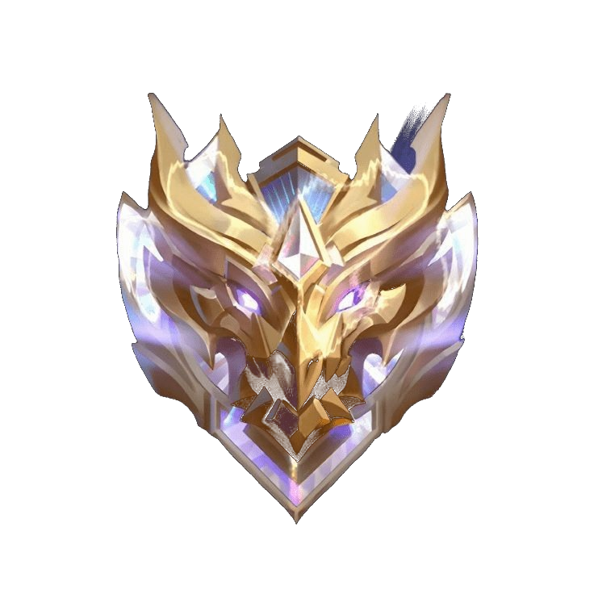

Student Mental Awareness
Menjaga keseimbangan antara produktivitas, kesehatan mental, dan waktu istirahat agar mahasiswa dapat berkembang secara sehat tanpa mengalami burnout.

Fenomena yang sering terjadi pada mahasiswa modern di era serba cepat.
Toxic productivity adalah kondisi ketika seseorang merasa harus terus produktif setiap waktu hingga mengabaikan kesehatan fisik maupun mental.
Banyak mahasiswa merasa harus selalu sibuk agar dianggap sukses, aktif, dan berprestasi.
Tekanan akademik, organisasi, media sosial, serta kebiasaan membandingkan diri dengan orang lain menjadi penyebab utama.
Akibatnya, mahasiswa sering merasa bersalah saat mengambil waktu untuk beristirahat.
Jika terus dibiarkan, hal ini dapat menyebabkan burnout, stres berkepanjangan, kehilangan motivasi, hingga menurunnya kualitas hidup.
Oleh karena itu, penting untuk memahami batas diri sendiri.
Beberapa gejala yang sering dialami tanpa disadari.
Merasa bersalah ketika sedang santai atau tidak melakukan pekerjaan.
Terus memikirkan target, nilai, tugas, dan pencapaian orang lain.
Tidur tidak teratur akibat terlalu fokus pada aktivitas produktif.
Tubuh terasa cepat lelah dan sulit fokus dalam menjalani aktivitas.
Memaksakan diri belajar terus-menerus tanpa memberi waktu istirahat.
Merasa tertinggal ketika melihat pencapaian orang lain di internet.
Produktivitas berlebihan dapat memengaruhi berbagai aspek kehidupan.
Cara sederhana menjaga produktivitas tetap sehat dan seimbang.
Membuat jadwal harian yang realistis dan sesuai kemampuan diri.
Memberikan waktu untuk tubuh dan pikiran beristirahat teratur.
Mengapresiasi diri sendiri atas proses dan usaha yang telah dilakukan.
Mengurangi kebiasaan membandingkan pencapaian dengan orang lain.
Meluangkan waktu bersama orang terdekat untuk menjaga kewarasan.
Menyeimbangkan aktivitas akademik, hiburan, dan waktu pribadi.
Coba periksa apakah kamu mengalami beberapa tanda berikut ini.
Produktif itu baik, tetapi menjaga diri sendiri jauh lebih penting.
"Istirahat bukan tanda kemalasan, tetapi bagian penting dari proses bertumbuh."
"Buat apa belajar begadang terus tiap malam tapi ga immo. IMMO GA?"
"Belajar menghargai diri sendiri adalah bentuk produktivitas yang sehat."